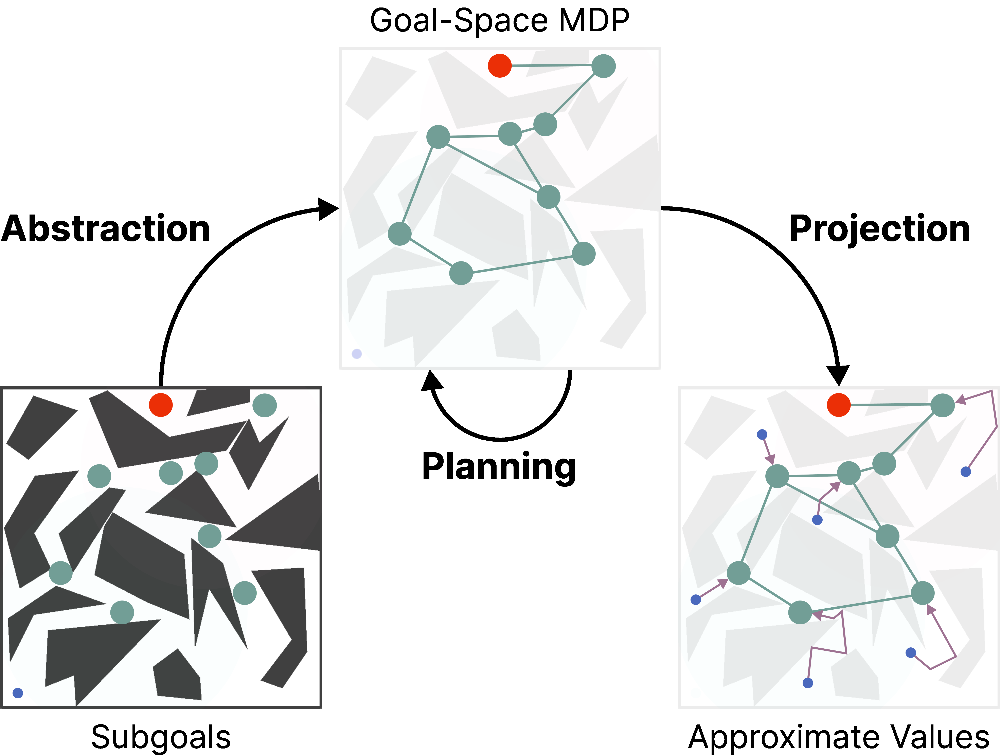

|
Parham Mohammad Panahi
I am a machine learning and reinforcement learning researcher at the University of Alberta, working with Adam White. I am also affiliated with the RLAI lab and the Alberta Machine Intelligence Institute (amii). Before that, I graduated with a M.Sc. in Computing Science from the University of Alberta in 2024.
Email /
CV /
Scholar /
Github /
M.Sc. Thesis
|
|
Research
Keywords: Reinforcement Learning, Representation Learning, Continual Learning, Model-Based RL, Optimization, and Machine Learning.
I am broadly interested in machine learning and reinforcement learning. My research goal is to create efficient and reliable learning systems capable of continual interaction and decision-making in a changing world.
|
|
|
Investigating the Interplay of Prioritized Replay and Generalization
Parham Mohammad Panahi,
Andrew Patterson,
Martha White,
Adam White
Reinforcement Learning Conference (RLC), 2024
We present insight into the interaction between prioritization, bootstrapping, and neural networks and propose several improvements for prioritized replay in tabular settings and noisy domains.
|
|

|
Goal-Space Planning with Subgoal Models
*Chunlok Lo,
*Kevin Roice,
*Parham Mohammad Panahi,
Scott M. Jordan,
Adam White,
Gabor Mihucz,
Farzane Aminmansour,
Martha White
Journal of Machine Learning Research (JMLR), 2024
We constrain background planning to a given set of (abstract) subgoals and learning only local, subgoal-conditioned models to avoid compounding model error. Also appeared as an oral presentation at Planning and Reinforcement Learning Workshop at ICAPS 2024.
* indicates equal contribution
|
|
|
K-percent Evaluation for Lifelong RL
Golnaz Mesbahi,
Parham Mohammad Panahi,
Olya Mastikhina,
Martha White,
Adam White
Preprint, 2024
We propose a new approach for evaluating lifelong RL agents where only k percent of the experiment data can be used for hyperparameter tuning. We find algorithms deisgned to maintain network plasticity perform well under this evaluation scheme.
|
|
{kind=link}